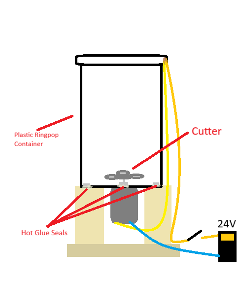
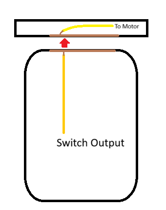

Warning:
This machine has been lost and no pictures exist.
Blendymatron
Description:
A blender.
Goal:
Make a blender so we can enjoy delicacies.
Concept:
Using a motor for a small submarine we found, we could make a blender.
At this point, we had basically no experience so we were limited in our tools.
Here was our final design:

Parts:
This project was not really thought out prior to construction, so we made it all on the fly.
Our case was a RingPop container, which was shockingly the strongest part of the machine.
The cutter was a random metal part we found in the rafters upstairs, which we took home and sharpened. Being basically 3 circles, we could only make it so sharp, so the cutter more beats instead of cuts.
For safety purposes, we always put up a big acrylic window wall thing and we have electric contacts to make sure the lid is closed before the user turns on the Blendymatron.

...I don't like this project.